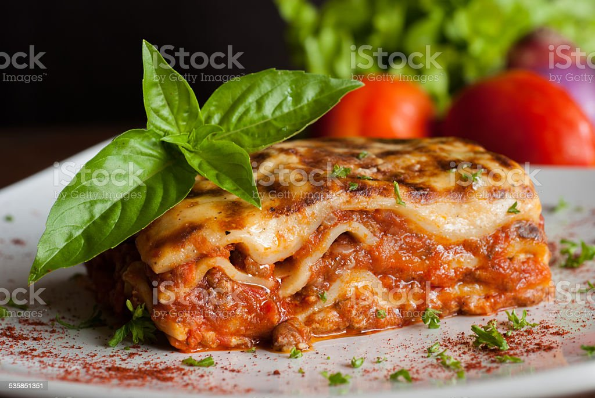

Lasagna Recipe

An easy lasagna recipe that saves me lots of time. This recipe is simple and satisfies everyone in the family. Try it tonight!
Nutrition Facts
Per Serving: 377 calories; protein 29.4g; carbohydrates 26.4g; fat 16.7g; cholesterol 89.5mg; sodium 870.3mg. Full Nutrition
Ingredients
- 1 pound lean ground beef
- 1 (32 ounce) jar spaghetti sauce
- 32 ounces cottage cheese
- 3 cups shredded mozzarella cheese, divided
- 2 eggs
- ½ cup grated Parmesan cheese
- 2 teaspoons dried parsley
- salt to taste
- ground black pepper to taste
- 9 lasagna noodles
- ½ cup water
Steps
- Preheat the oven to 350 degrees F (175 degrees C).
- Warm a large skillet over medium heat. Add ground beef and cook until browned, 8 to 10 minutes. Drain the grease. Stir in spaghetti sauce and simmer for 5 minutes.
- Mix together cottage cheese, 2 cups of mozzarella cheese, eggs, 1/2 of the grated Parmesan cheese, dried parsley, salt, and pepper in a large bowl.
- Spread 3/4 cup of sauce in a 9x13-inch baking dish. Cover with 3 uncooked lasagna noodles, 1 3/4 cups of cheese mixture, and 1/4 cup sauce; repeat layers once more. Top with remaining 3 noodles, sauce, mozzarella, and Parmesan cheese. Add 1/2 cup water along the edges of the dish. Cover tightly with aluminum foil.
- Bake in the preheated oven for 45 minutes. Uncover and bake for an additional 10 minutes. Let stand 10 minutes before serving.